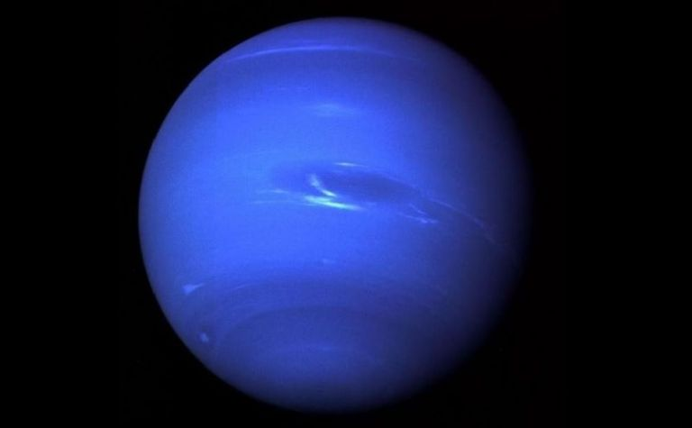
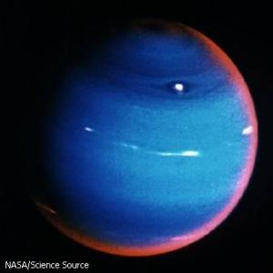
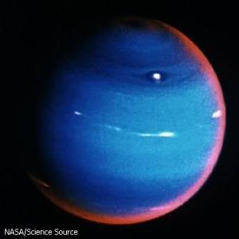
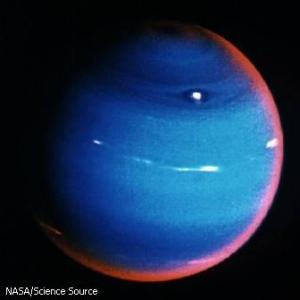
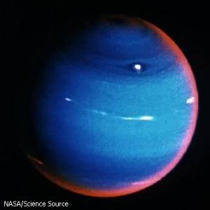

 



Neptunus merupakan planet kedelapan dalam tata surya kita. Jaraknya dari matahari sekitar 4.500 juta km. Untuk sekali putaran mengelilingi matahari, Neptunus membutuhkan waktu 165 tahun. Periode rotasinya 16 jam. Diameter Neptunus hampir empat kali diameter bumi, yaitu sekitar 48.600 km. Neptunus memiliki delapan satelit, dua diantaranya adalah Triton dan Nereid. Keadaan planet Neptunus hampir sama dengan planet Uranus. Kedua planet ini sering disebut planet kembar. Neptunus adalah planet dalam tata surya yang paling berangin. Pada planet ini dapat terjadi badai sangat besar yang mencapai sepuluh kali kekuatan suatu angin topan di Bumi, hampir cukup untuk memecahkan tembok suara. Apa yang menyebabkan badai besar ini menjadi salah satu misteri yang besar dari planet Neptunus. Pada planet Neptunus mungkin tidak terdapat batasan-batasan antara lapisanlapisannya. Planet ini mempunyai suatu inti yang kecil dari batu karang dan dikelilingi oleh suatu samudra bercampur dengan lumpur dan material berbatu. Atmosfernya yang terdiri dari helium dan hidrogen. Seperti pada Uranus, sedikit gas metana memberikan warna hijau kebiru-biruan pada planet ini.